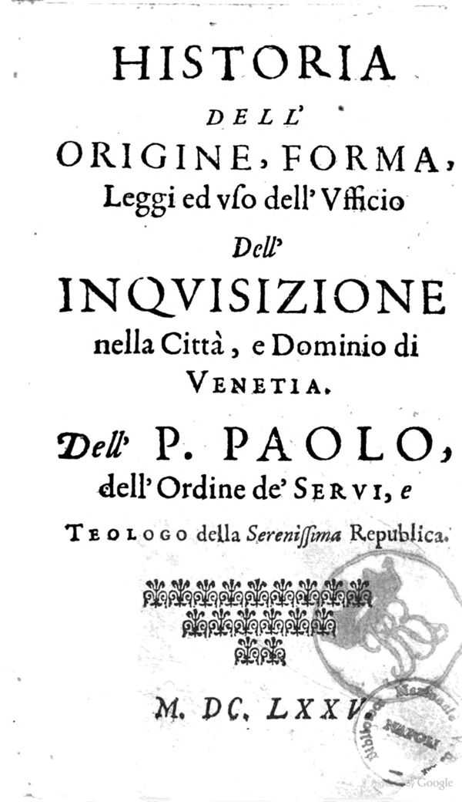
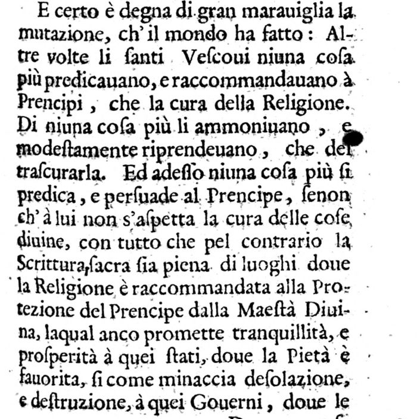

“A lui non s’aspetta la cura delle cose divine” (1675, p. 79)

Italian: 1675, p. 79, scan n92. Sarpi has just described the new doctrine “that the care of religion does not belong to the prince”, coloured with two pretexts: that it is spiritual and divine, and that the prince is busy with greater things.

And truly the change the world has undergone is a great wonder. In former times the holy bishops preached and commended nothing to princes more than the care of religion; of nothing did they admonish them more, and modestly reprove them, than of neglecting it. And now nothing is preached and urged upon the prince more than that the care of divine things does not belong to him, although, on the contrary, Holy Scripture is full of passages where religion is commended to the prince’s protection by the Divine Majesty, which also promises peace and prosperity to states where piety is favoured, as it threatens desolation and destruction to governments where divine things are treated as foreign to them.
Original Italian
E certo è degna di gran maraviglia la mutazione, ch’il mondo ha fatto: Altre volte li santi Vescovi niuna cosa più predicavano, e raccommandavano à Prencipi, che la cura della Religione. Di niuna cosa più li ammonivano, e modestamente riprendevano, che del trascurarla. Ed adesso niuna cosa più si predica, e persuade al Prencipe, senon ch’à lui non s’aspetta la cura delle cose divine, con tutto che pel contrario la Scrittura sacra sia piena di luoghi dove la Religione è raccommandata alla Protezione del Prencipe dalla Maestà Divina, laqual anco promette tranquillità, e prosperità à quei stati, dove la Pietà è favorita, si come minaccia desolazione, e destruzione, à quei Governi, dove le cose divine sono tenute come aliene.
| Lecky (ch. V, note 11) | Sarpi, 1675, p. 79 |
|---|---|
| reprendevano | riprendevano |
| se predica | si predica |
| del contrario | pel contrario |
| alla protezione del prencipe della Maestà Divina | alla Protezione del Prencipe dalla Maestà Divina (by the Divine Majesty) |
| (Pp. 89, 90) | p. 79 |
Lecky’s readings were checked on his 1865 page. Some of the differences may come from his 1639 edition rather than from him.
Where Lecky’s other references fall in the 1675 printing
| Lecky’s note (ed. 1639) | Subject | 1675 printing |
|---|---|---|
| Note 7: pp. 48–57 | Venice resists the Inquisition until the agreement with Pope Nicholas IV in 1289 | pp. 49–56 (n62–n69): a bull “given at Rieti, 28 August 1289”, the “first concordat” |
| Note 14: p. 60 | Riots against the Inquisition at Milan (1242) and Parma (1279) | p. 47 (n60): “due notabili sedizioni … Una in Milano, del 1242. L’altra in Parma, del 1279” (read on the image) |
| Note 11: pp. 89–90 | Bishops and the prince’s care of religion | p. 79 (above) |
| Note 17: pp. 192–193 | Councils condemn heretical books; Arcadius against the Eunomians, Theodosius against Nestorius | p. 186 (n199) |
The differences are not constant (about 1, 13, 10 and 6 pages), so the 1675 printing is not a page-for-page reprint of 1639. The places in this table were found in the OCR and their pages read from the running heads; the passages themselves are not transcribed here.
Further down the rabbit hole
Sources that Lecky cites in the notes next to the ones that cite this page.
- Llorente, Histoire critique de l’Inquisition d’EspagneHow many did the Spanish Inquisition burn? Its former secretary counts
- Paramo, De origine et progressu officii sanctae inquisitionisWhy the dead are tried for heresy
- An Homily against Disobedience and Wilful RebellionHell as the prison of rebels: the Church of England preaches obedience
- Aquinas, Summa theologiae, II-IIHeretics and forgers; the usurper’s subjects
- Ayala, De jure et officiis bellicisAnyone may kill a usurper, not a lawful prince
- Barrington, Observations on the More Ancient StatutesHenry VIII’s 72,000 hangings, and why English thieves had “better hearts”


Backlinks
Every place in Rationalism in Europe that links to this page (generated automatically when the site is built).